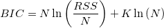

+2K, & \mbox{when }\frac NK\geq 40 \\ N\ln(\frac{RSS}N)+2K+\frac{2K(K+1)}{N-K-1}, & \mbox{when}\frac NK< 40 \end{cases}")
The fitcmpmodel X-Function (accessible by selecting Analysis: Fitting: Compare Models from the menu) compares results of fits to one dataset with two different fitting functions. It is capable of determining which model is the better.
The fit compare tools do not calculate the result directly from the datasets. It takes the fitting result worksheets as inputs. In other words, to compare two models, you should first fit the datasets by two models separately, and then select the fit report worksheets as the X-Function input. The model comparison is done using three different tests: F-test and a second order Akaike Information Criterion (AIC) and Bayesian Information Criterion (BIC) test.
The F-test method assumes that the two models are nested, where one model is a simplified version of the other, such as a second order polynomial and a third order polynomial. The F value is computed as:
where RSS1 and df1 is the residual sum of square and the degree of freedom of the simpler model. Then we can calculate the probability p by:
If the models are not nested, the F-test results should not be considered. For example, if the models have the same degree of freedom, df1-df2 will be zero and we cannot compute the F value.
On the other hand, the AIC test does not require the two models to be nested. So any two models can be compared using this method.
For each model, Origin calculates the AIC value by:
For two fitting models, the one with the smaller AIC value is suggested to be a better model for the dataset.
We can also make decisions based on the Akaike's weight value, which can be computed as:

where ∆AIC is the deference between two AIC values. The Akaike's weight indicates the probability of a better model.
Bayesian information criterion is a model selection criterion, which is modified from the AIC criterion.
The penalty term for BIC is similar to AIC equation, but uses a multiplier of ln(n) for k instead of a constant 2 by incorporating the sample size n. That can resolve so called over fitting problem in data fitting.

Note: The fit compare model requires the values of RSS, df and N. Please make sure to output these results when perform fitting.